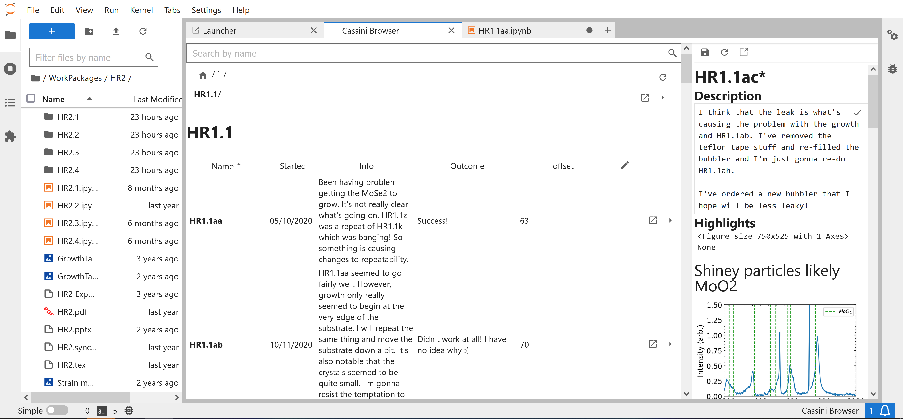
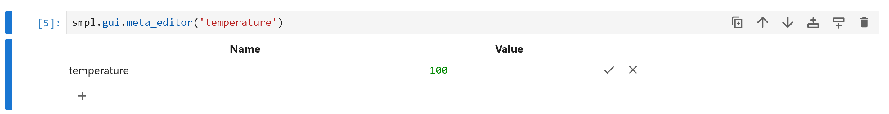

JupyterLab GUI¶
Development work is ongoing to create a complementary JupyterLab GUI for Cassini.
The Github page for the project can be found here.
Installation¶
To have a go, install the latest version of the jupyterlab extension using:
pip install --pre jupyter_cassini_server
As you can see, the jupyterlab extension is still in the pre-release stage and also relies on a small number of pre-release changes to cassini too,
so you should expect this to be an bit of an unstable experience.
Setup¶
Cassini splits your work into ‘Tiers’, which form a project heirarchy.
By default, these tiers are Home, WorkPackage, Experiment, Sample and DataSet.
So Home consists of a set of WorkPackage s, WorkPackage s consist of a set of Experiment s etc. etc.
To setup cassini we create a project.py file in the folder we want the project to live. In this we first import Project and the set of DEFAULT_TIERS:
# project.py
from cassini import Project, DEFAULT_TIERS
We then create a project instance, telling it, these are the tiers in my project and this is where my project lives:
project = Project(DEFAULT_TIERS, __file__)
We then use project.launch() to launch our cassini project, but we still want project to be importable without launching another instance, so we write:
if __name__ == '__main__':
project.launch()
This would work as a project.py, but we also want to inject the new jupyterlab gui into your project.
To do so we add couple more lines, so the final project.py looks like:
# project.py
from cassini import Project, DEFAULT_TIERS
from cassini import jlgui
project = Project(DEFAULT_TIERS, __file__)
jlgui.extend_project(project) # this will inject the new gui_cls
if __name__ == '__main__':
project.launch()
With these changes, you can then run:
python project.py
From your terminal, which will launch jupyterlab and cassini.
To open the cassini browser, open the launcher and scroll down to the bottom and select Browser under the Cassini heading.
You can then create your first WorkPackage by clicking the little plus button in the empty table.
Notebook templates can be found in the templates folder that’s created in the same directory as your project.py.
What Next¶
To look at other features, head to Features, everything should work the same there, except Tier Meta data, changes to a tier’s metadata from the notebook should now be handled using the new metaeditor gui, which you access via:
smpl.gui.meta_editor('temperature')
which will render something like:
You can still edit a tier’s meta data using the python code described in Features, it’s just the JL gui currently has no way to detect any changes you make this way. This means the next time it goes to read the meta file’s content, if you have unsaved changes, it may freak out a bit. You can currently force the JL gui to check for updates to the meta data by clicking the refresh/ fetch from disk button in the tier preview panel.